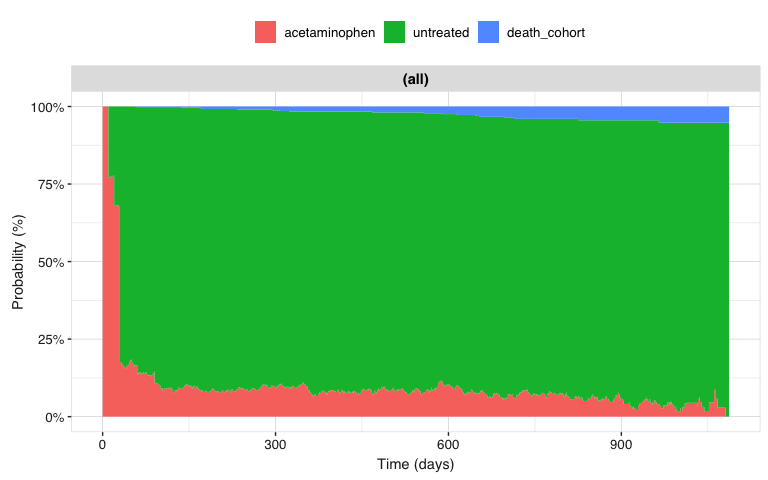

OmopMultistate estimates how individuals move between clinically meaningful states over time using cohort records from the OMOP Common Data Model. Each state is represented by a cohort definition, while a transition matrix declares which movements between states are possible.
The package provides a workflow to:
- prepare an OMOP
cohort_tablein the long format used by mstate; - estimate state occupation probabilities overall or for specific initial states;
- repeat the analysis across user-defined strata; and
- return results as a standard
summarised_resultobject and visualise them over time.
Ecosystem
OmopMultistate is part of the ecosystem of packages defined by omopgenerics. For more details on the ecosystem you can read the Tidy R programming with the OMOP Common Data Model book.
Tested sources
| Source | Driver | CDM reference | Status |
|---|---|---|---|
| Local R data frame | N/A | omopgenerics::cdmFromTables() |
 |
| In-memory DuckDB database | duckdb | CDMConnector::cdmFromCon() |
 |
Installation
You can install the development version of OmopMultistate from GitHub with:
# install.packages("pak")
pak::pak("oxford-pharmacoepi/OmopMultistate")Example
The following example uses a small mock OMOP CDM containing three states: treated, untreated, and the absorbing state death.
library(OmopMultistate)
library(omock)
cdm <- mockCdmFromDataset(datasetName = "synpuf-1k", source = "duckdb")First we will do the simplest possible case, we analyse discontinuation of acetaminophen. So we will create 3 cohorts: acetaminophen, discontinuation of acetaminophen (untreated) and death. We will use CohortConstructor to create the cohorts.
library(CohortConstructor)
#> Warning: package 'CohortConstructor' was built under R version 4.4.3
library(CodelistGenerator)
#> Warning: package 'CodelistGenerator' was built under R version 4.4.3
codes <- getDrugIngredientCodes(cdm = cdm, name = "acetaminophen", nameStyle = "{concept_name}")
# acetaminophen cohort
cdm$acetaminophen <- conceptCohort(cdm = cdm, conceptSet = codes, name = "acetaminophen")
#> ℹ Subsetting table drug_exposure using 6620 concepts with domain: drug.
#> ℹ Combining tables.
#> ℹ Creating cohort attributes.
#> ℹ Applying cohort requirements.
#> ℹ Merging overlapping records.
#> ✔ Cohort acetaminophen created.
# death cohort
cdm$death_cohort <- deathCohort(cdm = cdm, name = "death_cohort")
#> ℹ Applying cohort requirements.
#> ✔ Cohort death_cohort created.
# untreated cohort
cdm$untreated <- cdm$acetaminophen |>
padCohortEnd(days = 1L, name = "untreated") |>
padCohortDate(days = 0L, indexDate = "cohort_end_date", cohortDate = "cohort_start_date") |>
renameCohort("untreated")
# bind them together
cdm <- bind(cdm$acetaminophen, cdm$death_cohort, cdm$untreated, name = "my_study")Now we will focus on defining the transitions, the individuals can move from:
-
acetaminophentountreated -
acetaminophentodeath_cohort -
untreatedtoacetaminophen -
untreatedtodeath_cohort
trans <- transMat(
x = list(c(2, 3), c(1, 3), c()),
names = c("acetaminophen", "untreated", "death_cohort")
)
trans
#> to
#> from acetaminophen untreated death_cohort
#> acetaminophen NA 1 2
#> untreated 3 NA 4
#> death_cohort NA NA NASome records can occur on the same date. We resolve these ties in their logical order, placing death last because it is an absorbing state.
stateHierarchy <- c("acetaminophen", "untreated", "death_cohort")You can prepare the data in the long format used by mstate and then fit other models:
msData <- prepareMultistateData(
cohort = cdm$my_study,
trans = trans,
stateHierarchy = stateHierarchy
)
msData |>
head(10)
#> An object of class 'msdata'
#>
#> Data:
#> subject_id from to trans Tstart Tstop status from_name to_name
#> 1 18 1 2 1 0 10 1 acetaminophen untreated
#> 2 18 1 3 2 0 10 0 acetaminophen death_cohort
#> 3 25 1 2 1 0 30 1 acetaminophen untreated
#> 4 25 1 3 2 0 30 0 acetaminophen death_cohort
#> 5 29 1 2 1 0 10 1 acetaminophen untreated
#> 6 29 1 3 2 0 10 0 acetaminophen death_cohort
#> 7 32 1 2 1 0 30 1 acetaminophen untreated
#> 8 32 1 3 2 0 30 0 acetaminophen death_cohort
#> 9 51 1 2 1 0 10 1 acetaminophen untreated
#> 10 51 1 3 2 0 10 0 acetaminophen death_cohortIf we are interested in summarising the probabilities over time we can use the summariseMultistateProbabilities function:
result <- summariseMultistateProbabilities(
cohort = cdm$my_study,
trans = trans,
stateHierarchy = stateHierarchy
)When run interactively, these functions can print informational (ℹ) messages about records that were excluded. For example, a person who has a death record but never enters an eligible initial state cannot contribute to this analysis. These messages describe the input data; they are not R warnings.
tidy(result)
#> # A tibble: 9,552 × 9
#> cdm_name initial_state variable_name variable_level probability
#> <chr> <chr> <chr> <chr> <dbl>
#> 1 synpuf-1k overall prob_acetaminophen 0 1
#> 2 synpuf-1k overall prob_untreated 0 0
#> 3 synpuf-1k overall prob_death_cohort 0 0
#> 4 synpuf-1k overall prob_acetaminophen 10 0.770
#> 5 synpuf-1k overall prob_untreated 10 0.230
#> 6 synpuf-1k overall prob_death_cohort 10 0
#> 7 synpuf-1k overall prob_acetaminophen 12 0.772
#> 8 synpuf-1k overall prob_untreated 12 0.228
#> 9 synpuf-1k overall prob_death_cohort 12 0
#> 10 synpuf-1k overall prob_acetaminophen 13 0.774
#> # ℹ 9,542 more rows
#> # ℹ 4 more variables: cohort_table_name <chr>, follow_up_days <chr>,
#> # state_hierarchy <chr>, state_step <chr>You can visualise now the results. States are displayed in the same order as they appear in the transition matrix:
result |>
filterGroup(initial_state == "acetaminophen") |>
plotMultistateProbabilities()